FX Trends layouts
Every view on every device and orientation, from the sample in .trmnlp.yml.
Written by trmnl-plugin/screenshots.sh. Select an image to open it at full size.
full

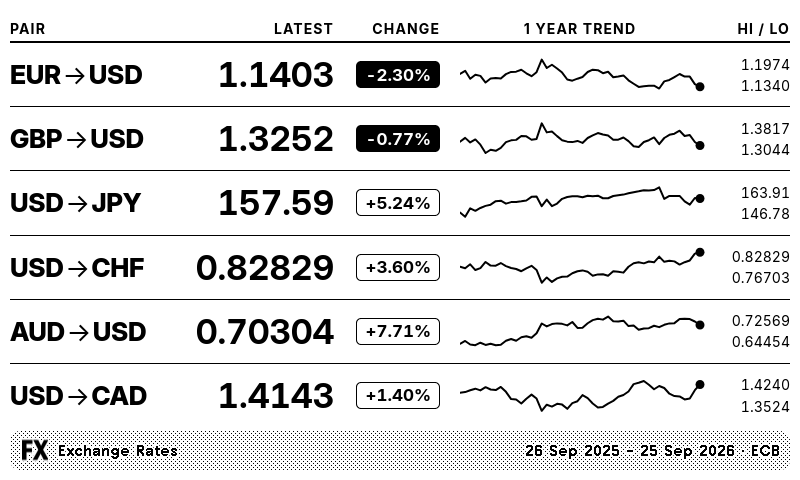

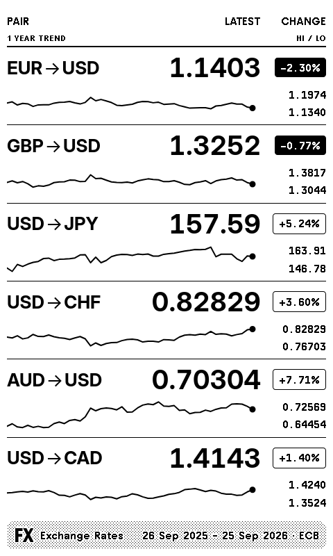

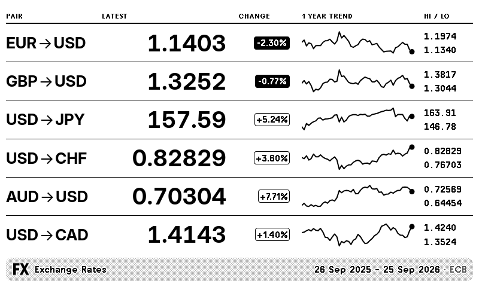

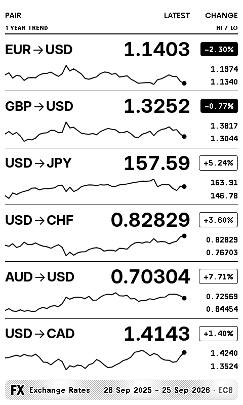

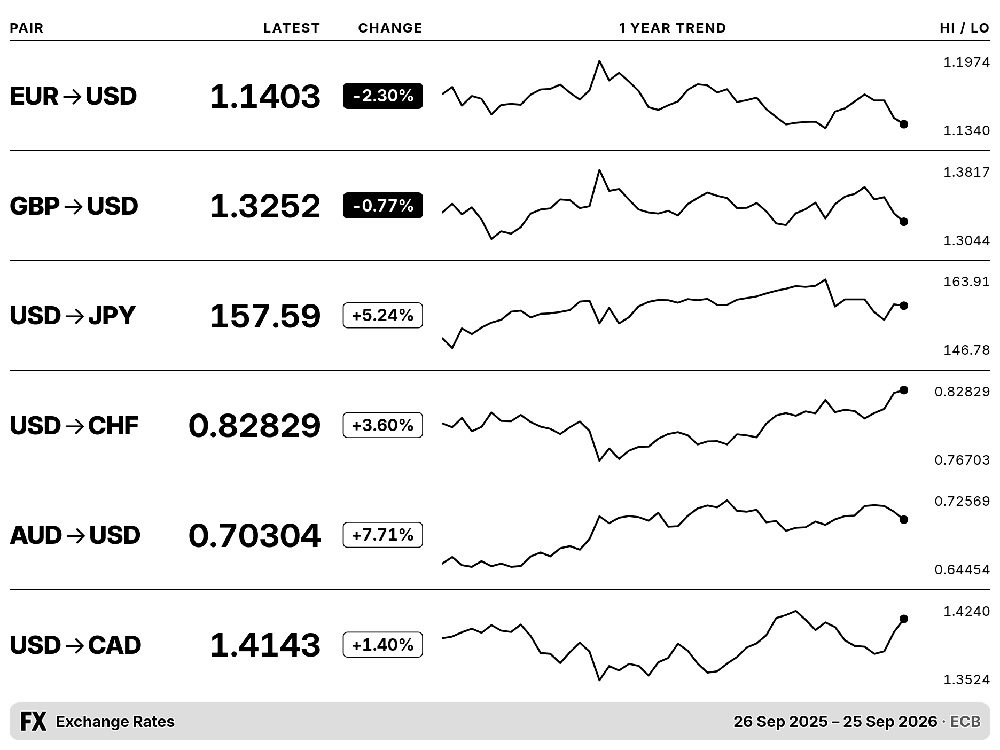

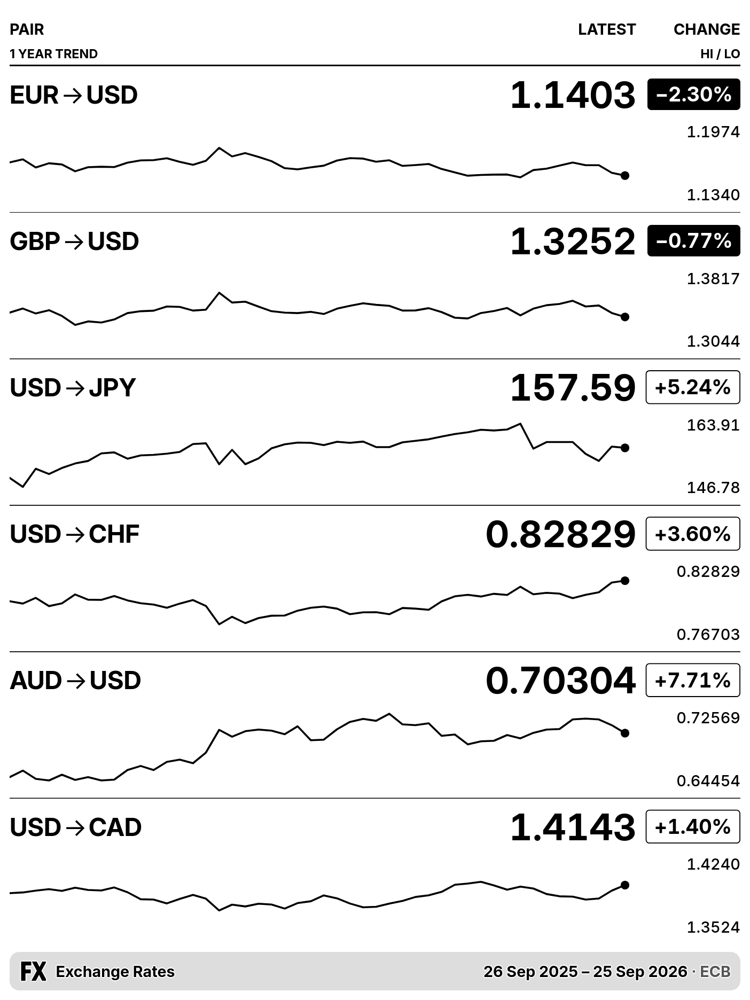
half_horizontal

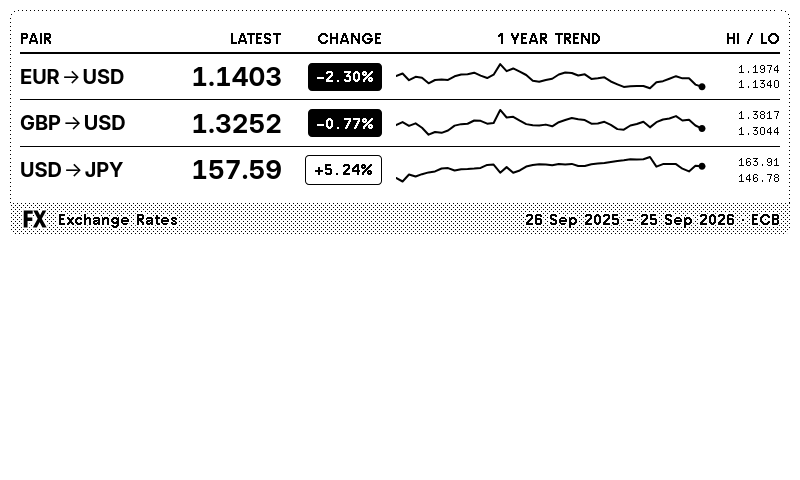

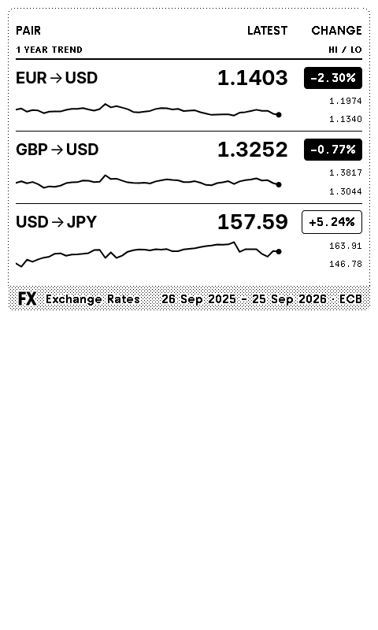

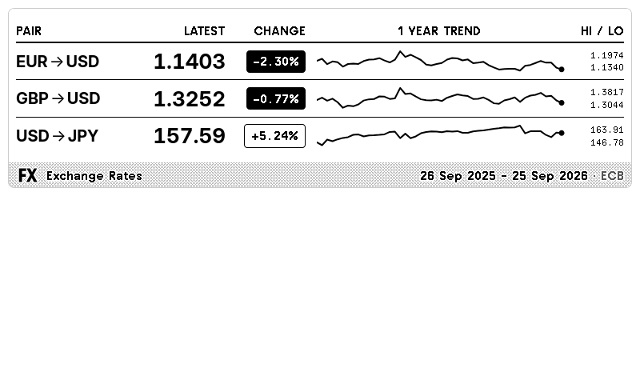

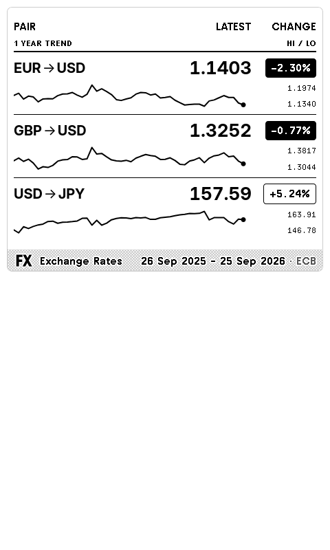

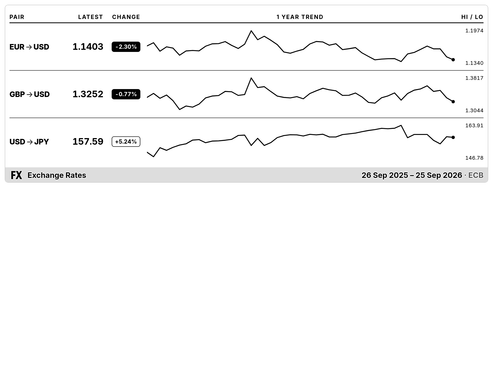

half_vertical


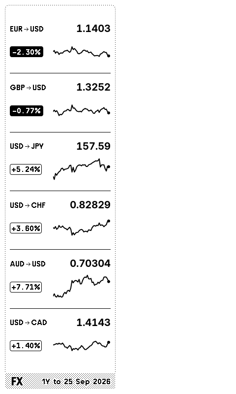

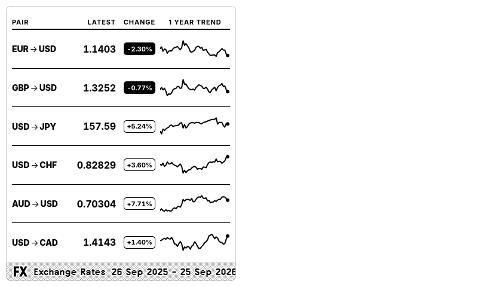

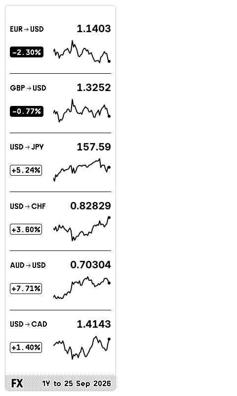

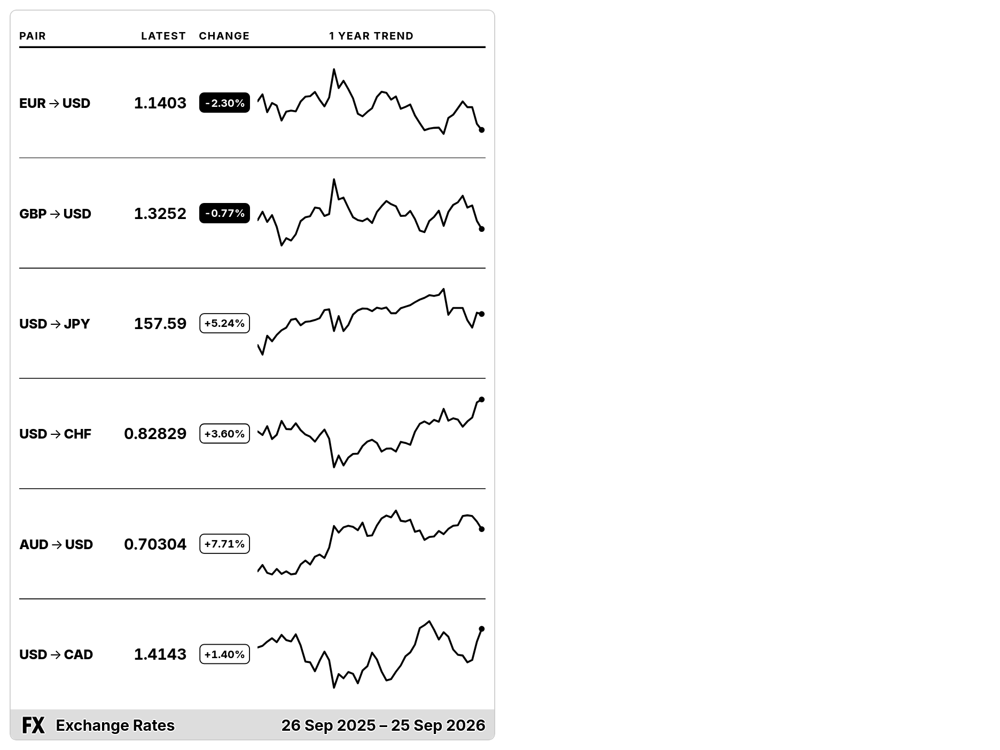

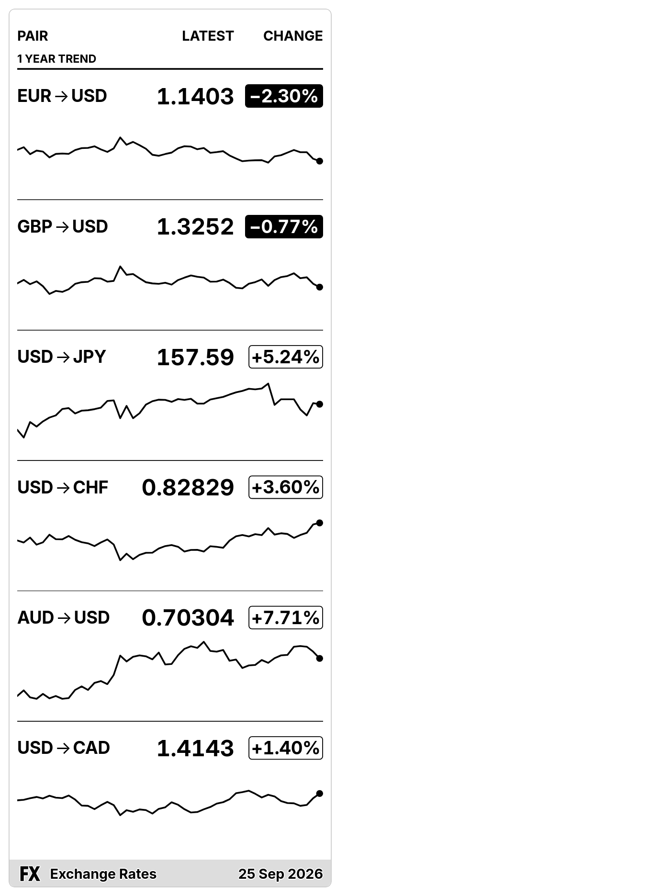
quadrant

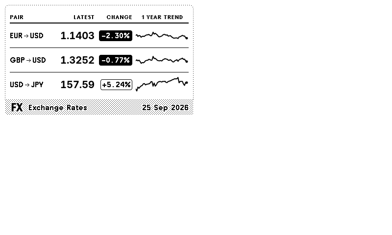


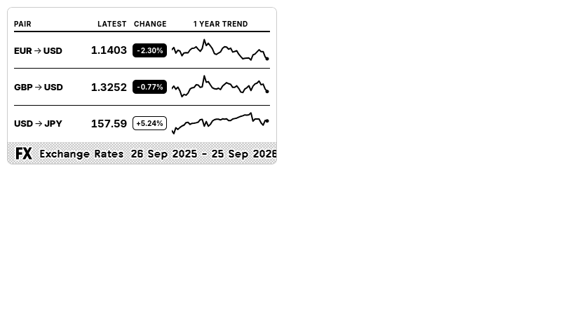

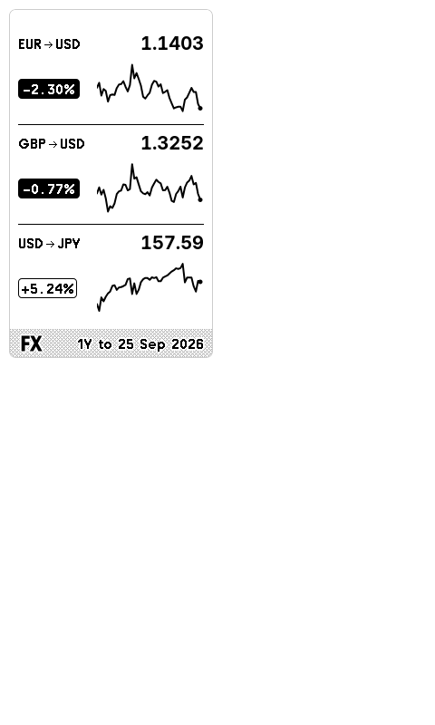

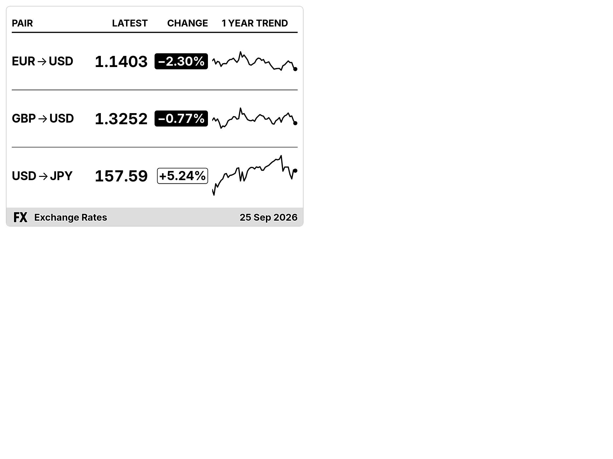